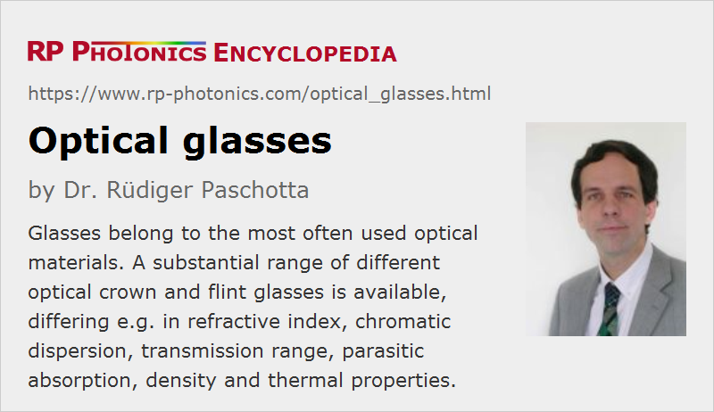

Optical Glasses
Definition: glasses of high quality, made for optical applications
More general term: optical materials
More specific terms: crown glasses, flint glasses, fluoride glasses, phosphate glasses
German: optische Gläser
How to cite the article; suggest additional literature
Author: Dr. Rüdiger Paschotta
There is a wide range of glass materials which are optimized for optical applications. Mostly, one uses inorganic glasses, on which this article concentrates. The article on plastic optics covers organic glasses, which increasingly substitute inorganic glasses in some applications, mainly because they can be used in low-cost fabrication technologies.
Typically Used Inorganic Glass Materials
Inorganic glasses are made by mixing certain compounds, melting them and letting the mass slowly (but not too slowly) solidify, so that an amorphous material is obtained. For more details of glass fabrication, see below.
Fused Silica and Silicate Glasses
Silica (amorphous silicon dioxide, SiO2) is widely used in optics, either as a pure substance (→ fused silica, fused quartz) or more frequently as a mixture with other compounds (silicate glasses).
Fused silica, often of high chemical purity, has quite favorable properties like a wide transparency range from the ultraviolet to the infrared region (depending on the material purity), low optical nonlinearities, a low coefficient of thermal expansion, high mechanical robustness and high chemical stability. Due to its very high solidification temperature, it can be operated at very high temperatures, but it is also difficult to process.
While the infrared transmission of highly purified fused silica can be very good, silicate glass often exhibits pronounced absorption peaks due to impurities, e.g. water absorption peaks.
Mixing with additional compounds leads to related materials such as borosilicates, aluminosilicates, germanosilicates etc., which are discussed in the following. Usually, silica remains the main constituent.
Most optical fibers are based on silica and are therefore called silica fibers. Typically, the fiber cladding material is pure silica, while the fiber core is made of germanosilicate or germanoaluminosilicate, for example.
Soda–lime Glasses
By adding substances like sodium oxide or carbonate, potassium oxide, calcium oxide, magnesium oxide and aluminum oxide to silica, one obtains soda–lime glasses. These are much softer than silica and have lower softening temperatures, so that they can be processed at accordingly lower temperatures. They are the most common commercial glasses, widely used for household windows, glass bottles and many other applications, but not much as high quality optical materials. For example, the high thermal expansion coefficient would not be favorable for optics applications.
Borosilicate Glasses
Boron trioxide (B2O3) can be mixed with silica, forming borosilicate glass (often with some other additions like sodium oxide and aluminum oxide). For example, the often used BK7 glass is a crown glass (see below) of that type.
Borosilicate glasses are chemically quite resistant, if the boron content is not too high. Compared with fused silica, they have a lower (although still relatively high) melting temperature, which makes them simpler and therefore cheaper to process. Their thermal expansion coefficient is higher than for fused silica, but still relatively low, resulting in good thermal shock resistance; therefore, borosilicate glasses are also used for cookware. Variants with higher thermal expansion coefficients are also available, matching the values of other important materials such as certain metals. High-borate variants are used e.g. in ultraviolet light applications.
Germanate Glasses
Germanate glasses are obtained by adding germanium oxide (GeO2) and sometimes other constituents to silica. Their infrared transmission extends to longer wavelengths, roughly 3 μm.
Germanosilicates and related glasses such as germanoaluminosilicates are often used for fiber cores of passive or active fibers, since their refractive index, which can be controlled via the germanium content, is somewhat higher than that of silica, providing guidance of light. The transmission losses in the infrared are of the order of 0.2 dB/m, and it is possible to transmit laser beams with more than 10 W of optical power through germanate multimode fibers.
Phosphate Glasses
Phosphate glasses are based on phosphorus pentoxide (P2O5) with some added chemical components. They have a very low glass transition temperature (typically below 400 °C). Their spectral range with high optical transmission is about 0.4 μm to 2 μm – somewhat narrower than for silica glasses. They exhibit a much lower optical damage threshold and a lower thermal conductivity than silicate glasses.
The opto-thermal coefficient dn / dT of phosphate glasses is negative, in contrast to many other materials. The nonlinear index is very low – nearly 3 times lower than for silica glasses.
Mixtures of phosphate and fluoride glass are called fluorophosphate glasses. Similarly, there are phosphosilicate glasses.
Rare-earth-doped phosphate glasses are used as laser gain media – both in bulk lasers and in the form of optical fibers for fiber amplifiers and lasers. One of their primary advantages is their very high solubility for rare earth ions (→ rare-earth-doped gain media) such as erbium (Er3+), ytterbium (Yb3+) and neodymium (Nd3+). This means that high concentrations of laser-active rare earth ions can be incorporated into phosphate glasses without detrimental effects such as clustering, which could degrade the performance via quenching effects.
See also the article on phosphate glasses with more details particularly on their use as laser gain media.
Fluoride Glasses
Fluoride glasses belong to the non-oxide glasses, made from compounds of fluorine with zirconium, for example (fluorozirconate glass), aluminum (fluoroaluminate glasses), or with indium (fluoroindate fibers). They can also contain various other heavy metals like lead.
Fluoride glasses are difficult to produce with high optical quality because of their tendency for crystallization during the glass transition. They are mechanically quite weak (fragile) and not resistant to moisture, for example.
Fluoride and fluorophosphate glasses can be used as high-index low-dispersion glasses, e.g. for the construction of achromatic optics.
A special property of heavy-metal fluoride glasses is their good transmission in the infrared spectral region. Therefore, they are mostly used for infrared optics.
Among the fluorozirconate glasses for fibers, ZBLAN (ZrF4-BaF2-LaF3-AlF3-NaF) is the most common. Such fibers can be doped with a number of rare earth ions for application in fiber lasers and amplifiers. There are fluoride-based upconversion lasers in the form bulk lasers or fiber lasers.
For more details, see the article on fluoride glasses.
Chalcogenide Glasses
Chalcogenides are chemical compounds containing chalcogens like oxygen, sulfur, selenium and tellurium. However, the term chalcogenide glasses is mostly used for non-oxide glasses, i.e., for sulfides, selenides or tellurides e.g. of arsenic (As) or germanium (Ge). They have substantially lower vibration frequencies (thus also lower phonon energies) than silica due to the higher mass of chalcogenide ions (comparing with oxygen ions). Consequently, their infrared absorption starts at longer wavelengths:
- Sulphide glasses like arsenic trisulfide (As2S3) are suitable e.g. for wavelengths of 1 to 6 μm, but can exhibit strong absorption peaks within that wavelength range, e.g. at ≈4 μm (see below).
- Selenide glass (As2Se3) can be used up to ≈9 μm.
propagation losses are often high due to impurities – much higher e.g. than those of fluoride glasses (see above).
Chalcogenide glasses have a low band gap energy and are thus not suitable for guiding shorter-wavelength light. (For that reason, such glasses also look colored, e.g. orange.) Mid-infrared fibers based on chalcogenide glass are sometimes labeled as CIR = chalcogenide-based infrared fibers. They are chemically fairly stable, e.g. insensitive to moisture, in contrast to some other mid-IR materials.
Filter and Attenuator Glasses
Although high optical transmission is often very desirable for optical glasses, one sometimes exploits absorption for optical attenuators and optical filters, e.g. in form of colored filter glasses. One may use the natural short-wavelength absorption above the bandgap wavelength, or the infrared absorption related to phonon generation. Additional absorption can be obtained by doping glasses with certain absorbing substances like rare earth metals or metals like ion, copper and cadmium.
Saturable absorbers can also be realized with doped glasses, e.g. with certain transition metal ions like Cr4+ or quantum dots as absorbers.
Poisonous Substances
Some glass types used in optics and photonics contain poisonous substances like arsenic, lead and cadmium. While lead is often added for improving various optical properties, dopants like cadmium are used for optical filtering. Although that hardly creates hazards during use, since those substances are tightly bound in the glass, there are serious attempts to ban their use wherever possible, since it is hard to ensure that those materials are properly handled after use so that they cannot get into the environment. For many classical arsenic and lead-containing glasses, environmentally friendly arsenic- and lead-free alternatives have been developed, typically with “N-” added to their names. For example, traditional BK7 glass is more and more replaced with N-BK7.
The RoHS directive of the European Union contributes much to that development. However, it gives temporally limited exceptions for some specific applications of optical and colored filter glasses containing cadmium and lead.
Crown and Flint Glasses
Glasses can be broadly categorized according to their chromatic dispersion and refractive index. Here, the chromatic dispersion is often quantified with a single figure, called the Abbe number ν, which is calculated from the refractive index at three different test wavelengths.
- Glasses with an Abbe number of larger than 55, indicating low chromatic dispersion, are called crown glasses. They tentatively have a low refractive index.
- Glasses with Abbe numbers below 50 are called flint glasses, which typically have relatively high refractive index values.
- There are some glasses with intermediate values of the Abbe number, forming a category without a special name.
Note that some authors use somewhat different boundaries between crown and flint glasses, for example using no region in between them, and sometimes using different limits for the Abbe number in regions with high or low refractive index.
The categorization into crown and flint glasses does not directly say anything on the chemical composition, but the high-dispersion flint glasses are tentatively more based on heavy constituents; they often contain lead, although lead-free alternatives are more and more offered. Note that typical crown glasses like BK7 can also contain heavy metals like lead.
A good overview over different glass types can be obtained with an n−ν diagram (Abbe diagram), where each glass is represented by a point, where the coordinates are the Abbe number ν and the refractive index n:
One can see that high-index glasses tend to have strong dispersion, although the correlation is of limited strength. For comparison, plastic optics (organic glasses) tend to have low refractive indices but still relatively high dispersion.
The index of refraction and Abbe number are often combined to a numerical glass code, used e.g. by glass manufacturers in product catalogues. Typically, one takes the first three digits of the refractive index value at some reference wavelength after the dot (with proper rounding) and combines that with the first three valid digits of the Abbe number. For example, BK7 glass with the refractive index 1.5168 (at 587.6 nm) and the Abbe number 64.17 gets the code 517642. There are also extended codes, including information on the glass density after a dot.
Names of Glass Types
Beyond the division into crown and flint glasses, there are names for certain glass types, which have been created by early German glassmakers like Friedrich Otto Schott. For example, SF is the abbreviation for Schwerflint, meaning a heavy flint glass. The table gives an overview:
| Abbrev. | German name | English name |
|---|---|---|
| K | Kron | crown |
| SK | Schwerkron | heavy crown |
| SSK | Schwerstkron | extra heavy crown |
| BK | Bor-Kron | boron crown |
| FK | Fluor-Kron | fluor crown |
| PK | Phosphat-Kron | phosphate crown |
| PSK | Phosphat-Schwerkron | phosphate heavy crown |
| FPSK | Fluorphosphat-Schwerkron | fluorophosphate heavy crown |
| LaK | Lanthan-Kron | lanthanum crown |
| LaSK | Lanthan-Schwerkron | lanthanun heavy crown |
| BaK | Barit-Kron | barium crown |
| F | Flint | flint |
| SF | Schwerflint | heavy flint |
| LF | Leichtflint | light flint |
| LLF | Doppelleichtflint | extra light flint |
| TF | Tiefflint | low flint |
| KzF | Kurzflint | short flint |
| KF | Kronflint | crown flint |
| BaF | Barit-Flint | barium flint |
| BaLF | Barit-Leichtflint | barium light flint |
| BaSF | Barit-Schwerflint | barium heavy flint |
| LaF | Lanthan-Flint | lanthanum flint |
Essential Properties of Optical Glasses
The following optical properties are relevant for many applications of optical glasses:
- High transparency in the relevant wavelength range is usually a crucial requirement. The transparency range is often limited by the bandgap energy on the short-wavelength side and by absorption involving phonons on the long-wavelength side. In addition, there can be absorption caused by certain impurities; such extrinsic absorption losses can be minimized by using very pure materials.
- Optical glasses should have a high degree of homogeneity, containing only a minimum amount of bubbles, striae and the like. When different glass compounds are used, they should be thoroughly mixed to obtain a homogeneous chemical composition. Some content of bubbles is hard to avoid in some special glasses, but may be tolerable e.g. even in imaging applications when they are not placed in an image plane. A minimum amount of stress-induced birefringence is also wanted, and can be achieved by slow cooling during the solidification.
- The refractive index is important for imaging applications, for example. A high refractive index is often useful, e.g. because lenses can then be made with weaker surface curvature. Note that the refractive index depends not only on the glass material, but also on the annealing rate applied during glass fabrication: rapid annealing can lead to a substantial drop of refractive index. Therefore, precision glasses need to be fabricated with a well defined annealing rate. This issue also needs to be carefully observed in the context of precision molding processes, where the cooling is typically quite rapid.
- The wavelength dependence of the refractive index determines the chromatic dispersion. Although it is often desirable to minimize chromatic dispersion, the availability of high-dispersion glasses (flint glasses) is essential exactly for reaching that goal; for more details, see the article on achromatic optics.
- A high temperature coefficient of the refractive index can be disturbing in some applications. That quantity varies substantially between different glasses. Also, a high coefficient of thermal expansion can be detrimental for the optical performance, apart from causing internal strain which may lead to fracture through thermal shock. Thermal expansion can also be relevant concerning dielectric coatings, which may not stick well if there is a too large mismatch of expansion coefficients.
Besides, some other properties can be important:
- For applications involving high optical intensities, the nonlinear index of a glass can be relevant. A high optical damage threshold is also important for applications with high optical intensities, e.g. from Q-switched lasers.
- Although a high homogeneity of refractive index is needed for most applications, special glasses with variable index are required for optical elements like gradient-index lenses. For example, for such purposes some glasses can be modified with ion exchange processes.
- A low density is advantageous for making lightweight optics.
- A high hardness (e.g. a Knoop Hardness greater than 600) makes an optical glass robust, but also more difficult to cut and polish. Therefore, optical elements made from particularly hard glasses are tentatively more expensive. Polishing of glass surfaces works best in a certain range of hardness values.
- Other mechanical properties of interest are the elasticity and the abrasion resistance.
- A high melting point allows for operation at high temperatures, but also makes the glass fabrication more difficult.
- A high optical quality is easier to achieve for materials which have an appropriately broad temperature range for solidification and a low tendency for crystallization.
- Most glasses are chemically relatively resistant, but there are exceptions. For example, fluoride glasses are often sensitive to moisture.
- For certain applications, for example in space technology or near nuclear reactors, the radiation resistance of optical glasses can be important. Special radiation-resistant glasses are available.
- There are photosensitive glasses for producing volume Bragg gratings.
- Glasses can be used as laser gain media, when they are doped with laser-active ions, e.g. rare-earth ions.
- Some glasses are suitable for drawing glass preforms into glass fibers.
- Faraday isolators require some special glasses with a high Verdet constant.
Note that the same type of glass can have significantly different properties e.g. concerning absorption losses caused by impurities, depending on the material quality. For example, fused silica with very low OH content is available which has a substantially improved transparency in the infrared spectral range.
Even for extremely high purity and homogeneity, an optical glass exhibits some level of propagation losses due to Rayleigh scattering. This is because glasses are amorphous materials, exhibiting some level of optical inhomogeneity on a microscopic level. In some practical cases – for example for single-mode fibers as used in optical fiber communications in the 1.55-μm region –, that theoretical limit for the propagation losses has been reached, with losses of only ≈0.2 dB/km, which is orders of magnitude lower than in ordinary window glasses, for example. For reaching even lower losses, one would have to use longer optical wavelengths; note that the strength of Rayleigh scattering scales with the inverse fourth power of the wavelength.
Glass Fabrication; Supply Forms
For producing high-quality optical glasses with good homogeneity, special precautions have to be taken. This begins with using rather pure raw materials and equipment which is carefully designed to avoid contaminations with unwanted substances. Typically, one fabricates block glass by filling some amount of glass melt into a block form, then leaving it for some time in molten form for settling down, and slowly cooling it up to solidification with a carefully controlled speed. Slow cooling allows for annealing, i.e., the relief of internal mechanical stress. A very slow and well defined annealing phase is important particularly for reaching a very low level of stress-induced birefringence, but also for reaching consistent refractive index values. Precision optical glass is often delivered as fine annealed glass with a reference annealing rate of e.g. 2 K/h.
Other supply forms of raw optical glasses, from which optical components such as lenses or prisms can be made, are large strips and rods. Some suppliers of optical glasses also offer processed forms like plates, cut prisms or pressed blanks.
For more details, in particularly on further production steps for optical glass components, see the article on optical fabrication.
Suppliers
The RP Photonics Buyer's Guide contains 32 suppliers for optical glasses.
Questions and Comments from Users
Here you can submit questions and comments. As far as they get accepted by the author, they will appear above this paragraph together with the author’s answer. The author will decide on acceptance based on certain criteria. Essentially, the issue must be of sufficiently broad interest.
Please do not enter personal data here; we would otherwise delete it soon. (See also our privacy declaration.) If you wish to receive personal feedback or consultancy from the author, please contact him e.g. via e-mail.
By submitting the information, you give your consent to the potential publication of your inputs on our website according to our rules. (If you later retract your consent, we will delete those inputs.) As your inputs are first reviewed by the author, they may be published with some delay.
See also: crown glasses, flint glasses, optical materials, optical crystals, optical fabrication
and other articles in the category optical materials
|  |
If you like this page, please share the link with your friends and colleagues, e.g. via social media:
These sharing buttons are implemented in a privacy-friendly way!